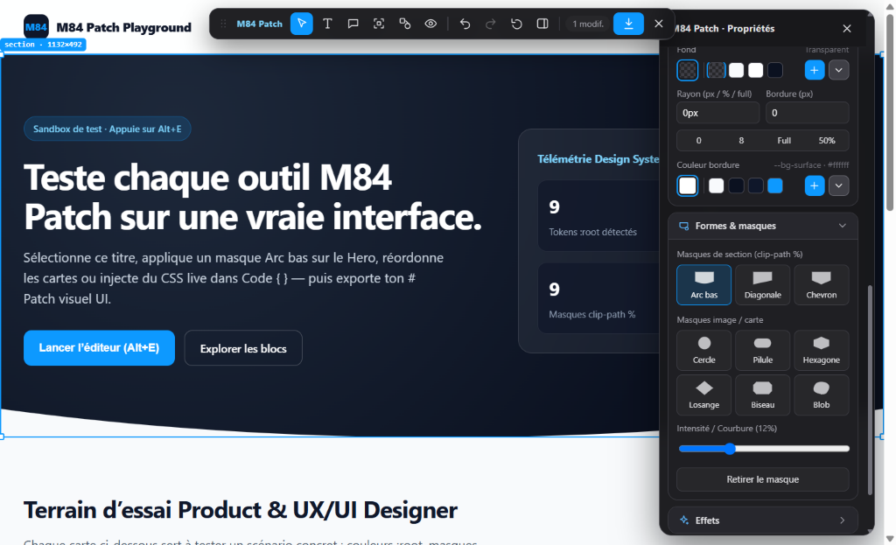

See M84 Patch in action
Real screenshots captured on the live Playground. Click any image to zoom.
Open M84 Patch on any page
Launch M84 Patch with 1 click on the Chrome Extension or press Alt+E. Mounted inside a Shadow DOM so it never conflicts with Tailwind or your app CSS.

Select, traverse the DOM & tweak :root tokens
Click any element for its unique CSS selector, jump Parent/Child, drag-scrub numbers (Shift = ×10), reorder siblings, and pick directly from your :root color tokens.
Apply responsive masks, shapes & Code { }
Apply 9 responsive % clip-path presets (Bottom Arc, Diagonal, Circle, Blob…), draw Guide / Real vector shapes (S), or test scoped live CSS in Code { }.

Copy the # Visual UI Patch to any AI
Add optional design intent, copy the structured diff (Styles, Copy, DOM Order, New Tokens, Shapes & Masks, Code Snippets, Notes) and paste it into ChatGPT (GPT), Claude, Antigravity, Cursor, Windsurf, Gemini, Copilot or any AI tool.